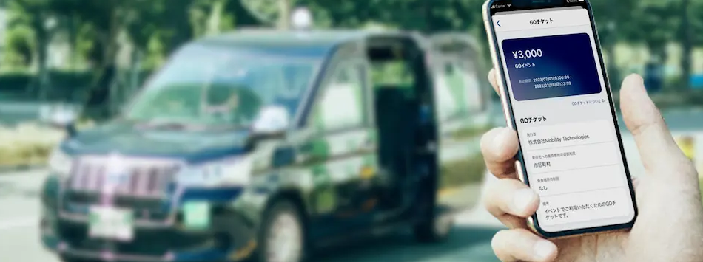
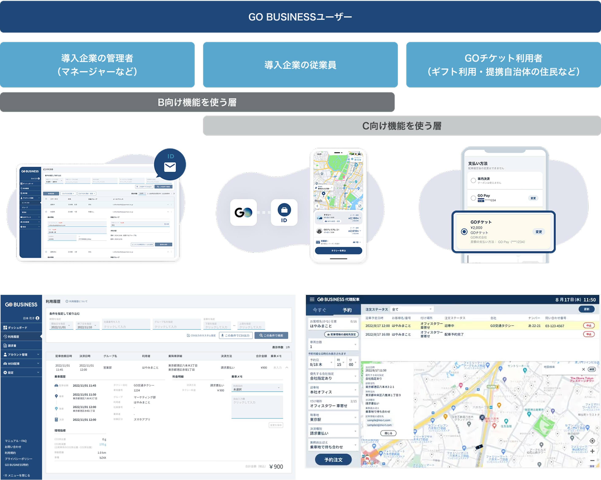
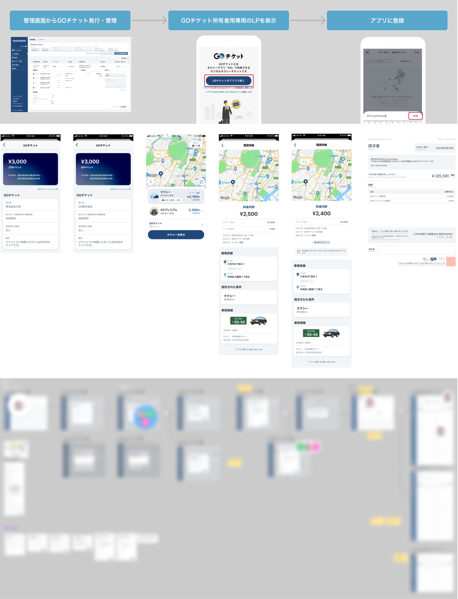

GO BUSINESSは会社のタクシー配車や予約、経費精算、領収書・利用管理を効率化・一元化するGOの法人向けWebサービスです。
ユーザーは「導入企業の管理者」「導入企業の従業員」「GOチケット利用ユーザー」に分類され、それぞれのユースケースに応じた最適なデザインを作成・改善しました。
作成するデザインが実際のユーザーストーリーに自然に馴染むかを意識しながら、PdMやエンジニアと密に連携して仕様検討から実装調整までを行いました。
PdMと協業しながら、各ターゲットユーザーの利用文脈・機能要件に適したUIを検討・提案。
レビューや仕様変更の指摘に対して、目的と整合性を保ちながら着地点をPdMと調整。
実装時の制約や開発環境に合わせて、柔軟かつ破綻のない仕様調整を実施。
導入企業の管理者が従業員のタクシー利用状況をスムーズに確認・管理し、請求書の発行までをミスなく行える画面デザイン・フローを設計しました。

提携自治体や企業が対象者に複数枚のタクシーチケットを一括配布・管理するためのフロント画面デザインを作成しました。（例：広陵町の妊婦の方へ向けた複数枚タクシーチケット配布事業など）

管理者、従業員、自治体担当者など、立場の異なる多様なユーザーのユースケースを深く理解し、業務効率化につながるUIに落とし込むプロセスの重要性を実感しました。
複雑なビジネスルールや運用フローが存在するサービスであっても、迷いなく直感的に操作できるデザインの提供を目指していきます。